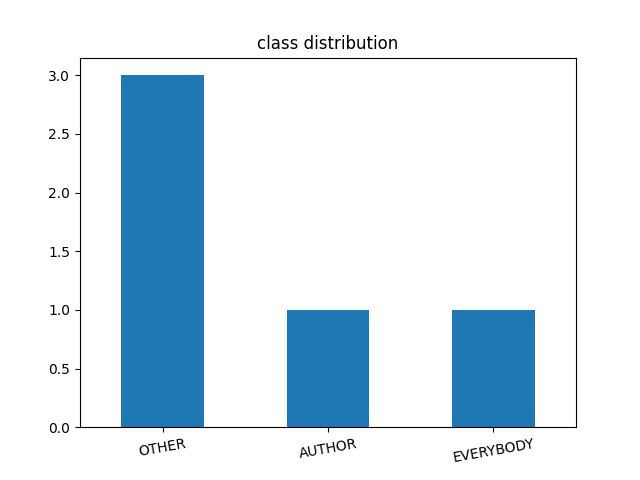
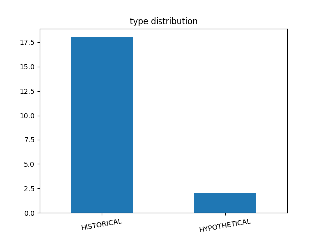
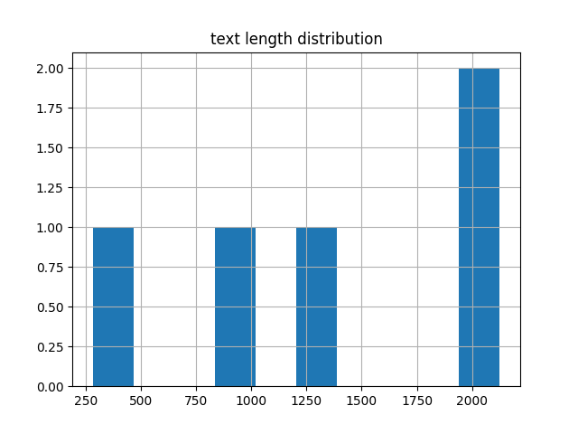
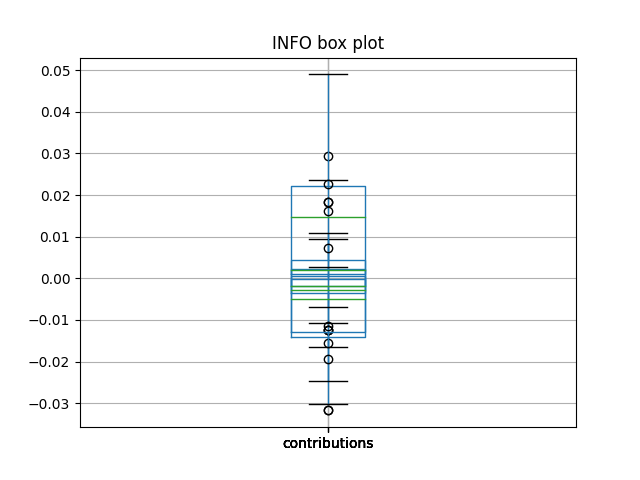
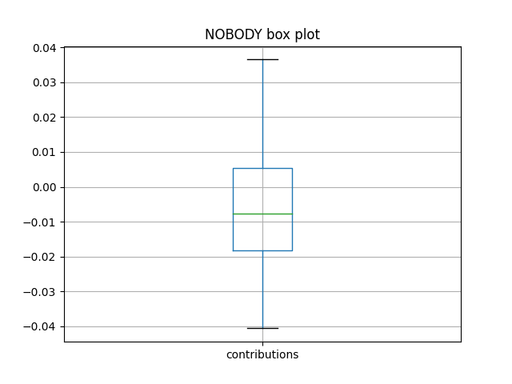
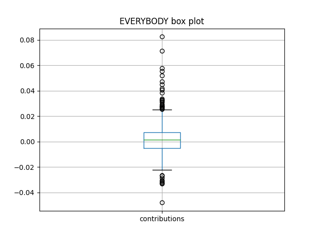
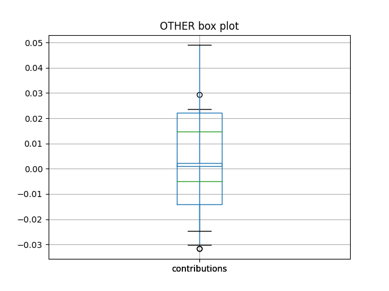
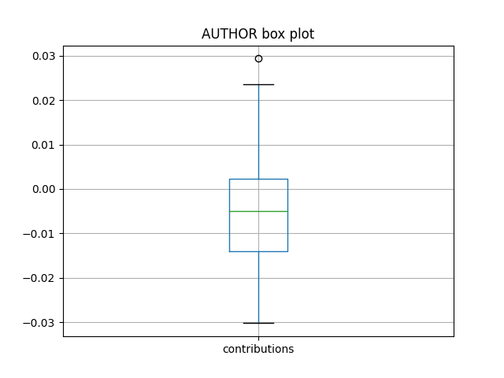

|
Date |
Code commit |
Sample selection |
Accuracy |
| Test report |
01/12/2020 21:01:57 |
b'v0.2-4-g787c3bc' |
120 Random samples |
71.794872 |
|
adaptive_pertubations |
max_number_of_pertubations |
number_of_features |
| Parameter |
True |
4000 |
5 |

| prediction |
AUTHOR |
NOBODY |
OTHER |
| label |
|
|
|
| AUTHOR |
7 |
1 |
16 |
| EVERYBODY |
2 |
0 |
3 |
| INFO |
0 |
0 |
2 |
| NOBODY |
1 |
2 |
7 |
| OTHER |
1 |
0 |
75 |
|
AUTHOR |
OTHER |
EVERYBODY |
NOBODY |
INFO |
| AUTHOR |
0.515956 |
0.239031 |
0.078400 |
0.116378 |
0.050235 |
| OTHER |
0.140248 |
0.654201 |
0.063370 |
0.099264 |
0.042917 |
| EVERYBODY |
0.000000 |
0.000000 |
0.000000 |
0.000000 |
0.000000 |
| NOBODY |
0.228579 |
0.310350 |
0.019099 |
0.394148 |
0.047825 |
| INFO |
0.000000 |
0.000000 |
0.000000 |
0.000000 |
0.000000 |

|
INFO part of speech |
count |
| 0 |
PRON |
138 |
| 1 |
CCONJ |
62 |
| 2 |
DET |
45 |
| 3 |
ADP |
34 |
| 4 |
PART |
31 |
|
INFO features |
contributions |
| 0 |
I |
-0.020142 |
| 1 |
caring |
-0.018686 |
| 2 |
said |
-0.016510 |
| 3 |
I |
-0.016351 |
| 4 |
not |
-0.016155 |
| 5 |
he |
-0.015014 |
| 6 |
history |
-0.014970 |
| 7 |
proclaimed |
-0.014409 |
| 8 |
partner |
-0.014258 |
| 9 |
He |
-0.013994 |
| 10 |
it |
-0.013114 |
| 11 |
refusing |
-0.012778 |
| 12 |
She |
-0.012747 |
| 13 |
food |
-0.012580 |
| 14 |
asking |
-0.012555 |
| 15 |
he |
-0.012412 |
| 16 |
hit |
-0.012201 |
| 17 |
and |
-0.012120 |
| 18 |
bigoted |
-0.011954 |
|
INFO features |
50% |
75% |
25% |
count |
max |
mean |
min |
std |
| 0 |
I |
-0.007616 |
-0.005541 |
-0.009280 |
33.0 |
-0.002468 |
-0.007748 |
-0.020142 |
0.003705 |
| 1 |
not |
-0.007811 |
-0.006801 |
-0.009056 |
13.0 |
0.003733 |
-0.007567 |
-0.016155 |
0.004387 |
| 2 |
he |
-0.007354 |
-0.006901 |
-0.009914 |
10.0 |
-0.003965 |
-0.008561 |
-0.015014 |
0.003246 |
| 3 |
a |
-0.005013 |
-0.004462 |
-0.005922 |
10.0 |
-0.002871 |
-0.005199 |
-0.008681 |
0.001651 |
| 4 |
feel |
-0.007757 |
-0.005793 |
-0.008794 |
9.0 |
-0.003717 |
-0.007125 |
-0.010028 |
0.002226 |

|
NOBODY part of speech |
count |
| 0 |
PRON |
103 |
| 1 |
ADP |
59 |
| 2 |
VERB |
30 |
| 3 |
CCONJ |
22 |
| 4 |
NOUN |
19 |
|
NOBODY features |
contributions |
| 0 |
I |
0.077289 |
| 1 |
lashing |
-0.073201 |
| 2 |
cutting |
-0.073008 |
| 3 |
ignored |
-0.072391 |
| 4 |
lying |
-0.068260 |
| 5 |
snoop |
-0.061036 |
| 6 |
throwing |
-0.060009 |
| 7 |
worried |
0.054924 |
| 8 |
shouldn |
-0.054256 |
| 9 |
nothing |
-0.053588 |
| 10 |
rarely |
-0.052550 |
| 11 |
irritated |
-0.049843 |
| 12 |
kids |
-0.049637 |
| 13 |
dirty |
-0.047472 |
| 14 |
date |
0.046612 |
| 15 |
feel |
0.044783 |
| 16 |
surrogate |
-0.044225 |
| 17 |
mad |
-0.043261 |
| 18 |
return |
-0.043177 |
|
NOBODY features |
50% |
75% |
25% |
count |
max |
mean |
min |
std |
| 0 |
I |
-0.018472 |
-0.014611 |
-0.022754 |
13.0 |
0.077289 |
-0.006983 |
-0.031155 |
0.031032 |
| 1 |
she |
-0.021415 |
-0.013220 |
-0.027914 |
10.0 |
-0.007481 |
-0.022104 |
-0.040361 |
0.011221 |
| 2 |
asshole |
-0.012928 |
-0.012597 |
-0.022134 |
9.0 |
-0.009596 |
-0.017786 |
-0.039800 |
0.010107 |
| 3 |
me |
-0.015101 |
-0.009345 |
-0.019749 |
9.0 |
-0.006952 |
-0.017277 |
-0.035713 |
0.009255 |
| 4 |
he |
-0.018001 |
-0.007176 |
-0.020518 |
8.0 |
0.032770 |
-0.010738 |
-0.025995 |
0.018896 |

|
EVERYBODY part of speech |
count |
| 0 |
PRON |
107 |
| 1 |
DET |
51 |
| 2 |
VERB |
38 |
| 3 |
NOUN |
37 |
| 4 |
ADV |
11 |
|
EVERYBODY features |
contributions |
| 0 |
breaking |
0.051491 |
| 1 |
lashing |
0.049745 |
| 2 |
family |
-0.047246 |
| 3 |
pranking |
0.044007 |
| 4 |
stop |
-0.042135 |
| 5 |
accidentally |
-0.041620 |
| 6 |
him |
0.040501 |
| 7 |
she |
0.039454 |
| 8 |
I |
-0.038146 |
| 9 |
not |
-0.036057 |
| 10 |
cheating |
0.035026 |
| 11 |
ghosting |
0.034426 |
| 12 |
him |
0.034089 |
| 13 |
tailgates |
0.033725 |
| 14 |
urgent |
-0.033534 |
| 15 |
family |
-0.031135 |
| 16 |
me |
0.030706 |
| 17 |
his |
0.030699 |
| 18 |
my |
0.030635 |
|
EVERYBODY features |
50% |
75% |
25% |
count |
max |
mean |
min |
std |
| 0 |
I |
-0.006887 |
0.010520 |
-0.012486 |
23.0 |
0.024579 |
-0.003504 |
-0.038146 |
0.015942 |
| 1 |
her |
0.008620 |
0.015875 |
0.007081 |
11.0 |
0.021067 |
0.011124 |
0.003763 |
0.005620 |
| 2 |
she |
0.013744 |
0.016170 |
0.008535 |
10.0 |
0.039454 |
0.014647 |
0.004308 |
0.010002 |
| 3 |
feel |
-0.007451 |
-0.005648 |
-0.008807 |
10.0 |
-0.002416 |
-0.007433 |
-0.012159 |
0.002845 |
| 4 |
not |
-0.013002 |
-0.009414 |
-0.018413 |
9.0 |
0.004337 |
-0.014054 |
-0.036057 |
0.011946 |

|
OTHER part of speech |
count |
| 0 |
PRON |
118 |
| 1 |
DET |
43 |
| 2 |
ADP |
32 |
| 3 |
CCONJ |
31 |
| 4 |
VERB |
29 |
|
OTHER features |
contributions |
| 0 |
steal |
0.203141 |
| 1 |
I |
-0.182203 |
| 2 |
I |
-0.173376 |
| 3 |
family |
0.173195 |
| 4 |
cutting |
0.169657 |
| 5 |
he |
0.151205 |
| 6 |
I |
0.139826 |
| 7 |
shoving |
0.128536 |
| 8 |
my |
0.127230 |
| 9 |
not |
0.127064 |
| 10 |
family |
0.126751 |
| 11 |
stop |
0.122702 |
| 12 |
motherShe |
0.121062 |
| 13 |
I |
0.120548 |
| 14 |
MIL |
0.120098 |
| 15 |
refusing |
0.119630 |
| 16 |
partner |
0.118228 |
| 17 |
he |
0.113414 |
| 18 |
he |
0.111667 |
|
OTHER features |
50% |
75% |
25% |
count |
max |
mean |
min |
std |
| 0 |
I |
-0.018424 |
0.057772 |
-0.044684 |
29.0 |
0.139826 |
0.000573 |
-0.182203 |
0.079019 |
| 1 |
me |
0.064726 |
0.068902 |
0.052379 |
21.0 |
0.089172 |
0.056273 |
-0.033581 |
0.025781 |
| 2 |
not |
0.074333 |
0.084424 |
0.060335 |
13.0 |
0.127064 |
0.073421 |
0.021194 |
0.024808 |
| 3 |
she |
0.045045 |
0.062231 |
-0.029166 |
13.0 |
0.074166 |
0.024074 |
-0.038222 |
0.047104 |
| 4 |
he |
0.071373 |
0.100848 |
-0.016693 |
12.0 |
0.151205 |
0.051159 |
-0.073575 |
0.069427 |

|
AUTHOR part of speech |
count |
| 0 |
PRON |
69 |
| 1 |
VERB |
63 |
| 2 |
ADP |
37 |
| 3 |
NOUN |
24 |
| 4 |
DET |
15 |
|
AUTHOR features |
contributions |
| 0 |
I |
0.234725 |
| 1 |
I |
0.194129 |
| 2 |
steal |
-0.172819 |
| 3 |
family |
-0.124991 |
| 4 |
spiteful |
0.111812 |
| 5 |
throwing |
0.102832 |
| 6 |
I |
0.100291 |
| 7 |
her |
0.099831 |
| 8 |
he |
-0.086531 |
| 9 |
said |
0.084489 |
| 10 |
cheated |
0.084455 |
| 11 |
my |
-0.083837 |
| 12 |
I |
-0.083372 |
| 13 |
cutting |
-0.082045 |
| 14 |
my |
-0.080850 |
| 15 |
not |
-0.080845 |
| 16 |
She |
-0.080316 |
| 17 |
he |
-0.079696 |
| 18 |
me |
-0.078839 |
|
AUTHOR features |
50% |
75% |
25% |
count |
max |
mean |
min |
std |
| 0 |
I |
-0.022289 |
0.043310 |
-0.036510 |
29.0 |
0.234725 |
0.009252 |
-0.083372 |
0.073905 |
| 1 |
me |
-0.043157 |
-0.031765 |
-0.046643 |
25.0 |
0.040466 |
-0.038924 |
-0.078839 |
0.021169 |
| 2 |
not |
-0.039275 |
-0.030840 |
-0.052143 |
16.0 |
0.033405 |
-0.035333 |
-0.080845 |
0.028878 |
| 3 |
my |
-0.051721 |
-0.033312 |
-0.063868 |
11.0 |
-0.014118 |
-0.049902 |
-0.083837 |
0.022593 |
| 4 |
she |
-0.029638 |
0.020346 |
-0.033043 |
10.0 |
0.052903 |
-0.011454 |
-0.073739 |
0.043273 |
9 : OTHER
56 : OTHER
71 : OTHER
73 : OTHER
100 : OTHER
101 : OTHER
157 : OTHER
274 : OTHER
284 : OTHER
287 : OTHER
294 : OTHER
299 : OTHER
309 : OTHER
311 : OTHER
336 : AUTHOR
364 : OTHER
415 : AUTHOR
505 : OTHER
533 : OTHER
539 : OTHER
645 : OTHER
700 : OTHER
702 : OTHER
703 : OTHER
732 : OTHER
779 : OTHER
801 : OTHER
857 : OTHER
888 : AUTHOR
917 : OTHER
971 : OTHER
1047 : OTHER
1082 : AUTHOR
1096 : OTHER
1098 : OTHER
1197 : OTHER
1264 : OTHER
1290 : OTHER
1311 : OTHER
1318 : NOBODY
1326 : OTHER
1341 : OTHER
1362 : OTHER
1366 : OTHER
1438 : AUTHOR
1482 : OTHER
1492 : OTHER
1546 : OTHER
1561 : OTHER
1566 : OTHER
1569 : OTHER
1735 : AUTHOR
1737 : OTHER
1752 : OTHER
1791 : OTHER
1820 : AUTHOR
1934 : OTHER
1999 : OTHER
2008 : OTHER
2041 : OTHER
2080 : OTHER
2108 : OTHER
2124 : OTHER
2141 : OTHER
2144 : OTHER
2148 : OTHER
2168 : OTHER
2182 : NOBODY
2210 : OTHER
2211 : OTHER
2216 : OTHER
2219 : OTHER
2250 : OTHER
2254 : OTHER
2257 : OTHER
2308 : OTHER
2318 : OTHER
2323 : OTHER
2325 : OTHER
2368 : OTHER
2379 : OTHER
2407 : OTHER
2414 : OTHER
2452 : OTHER